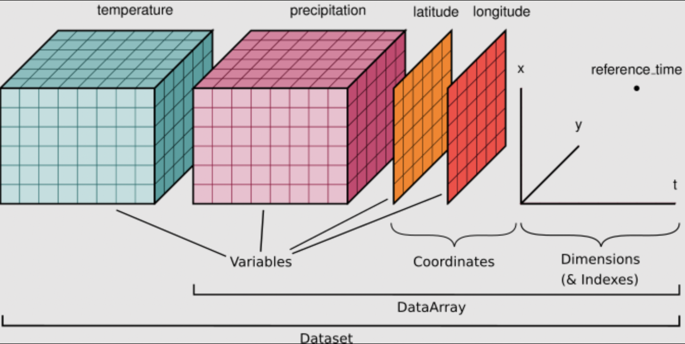

Geospatial and Gridded Data with Xarray¶
Xarray is a powerful tool for exploring multi-dimensional (esp. geospatial) data in a way that is efficient and robust to making coding mistakes. Pandas provided us with a way to look at tabular data, Xarray takes this further and provides a framework for N-dimensional data. One of the coolest Xarray features, is the integration with Dask. This will allow us to easily parallelize our Xarray analysis!
When using Xarray, our data will be stored in DataArrays which are collected together into a DataSet. A nice example of this is in the context of a climate model:
DataSet - contains all possible coordinates on the model grid and provides a list of all model variables (DataArrays)
DataArray - an individual model variable (e.g., sea surface temperature), the variable’s coordinates on the model grid, and any additional meta data about that specific variable
In the graphic below, you can see that temperature and precipitation are both variables with coordinates lat and lon. In this simple example temperature and precip each have 3 dimensions. Not only does the DataSet store all of this information, it also relates these two variables to each other by understanding that they share coordinates lat and lon. We will use some test data to inspect this further. Any NetCDF can be read into an Xarray dataset. Many popular models
facilitate reading raw output directly into Xarray.

[ ]:
TIP If you realize you need to use Pandas for a particular problem, never fear! You can convert between Pandas and Xarray with a single line of code. Pandas has lots of built in tools that are great for manipulating dates and text, so you may want to use Pandas and Xarray together.
[ ]:
Inspecting our DataSet¶
[ ]:
We can see that our variable air has 3 dimensions (lat, lon, time) defined by coordinates of the same name. We can inspect each of those coordinates to see their ranges.
[ ]:
[ ]:
Attributes (attrs) provide additional meta-data in the form of strings.
[ ]:
[ ]:
Selecting (Slicing) Sub-sets of Data with Labels¶
Xarray is great for doing reproducible science! Instead of having to remember or hard-code the order and size of your data dimensions, you can select subsets of data by their names and values. isel() is used to select by index, and sel() is used to select by dimension label and value.
[ ]:
[ ]:
[ ]:
Interpolating (or Resampling) Data¶
[ ]:
[ ]:
TIP xarray also has a function called interp_like which allows you to interpolate one DataArray to the coordinates of another DataArray.
Plotting in Xarray (so easy!)¶
[ ]:
[ ]:
[ ]:
Statistics in Xarray¶
[ ]:
[ ]:
EOF decomposition (a.k.a. PCA) with xeofs¶
Here we will show a brief tutorial on a package called ``xeofs` <https://xeofs.readthedocs.io/en/latest/content/user_guide/quickstart.html>`__ which computes Empirical Orthogonal Functions (EOFs) over Xarray DataArrays. EOF analysis is also sometimes called modal decomposition or PCA. We do not expect everyone to know the underlying mathematical principles. Perhaps you never need this, perhaps you use it all of the time already, perhaps you will learn it in the future. Because it is such a common analysis tool in climate and geosciences, we will spend about 10 minutes on it here.
If you are not interested in using EOFs, this can serve as an example of one of the many software packages for data analysis with Xarray.
[ ]:
[ ]:
This shows us that the first EOF explains 78% of the variance while the second one only explains 3%…What if we ask for more modes?
[ ]:
As we can see the significance of the modes is just decreasing. Now lets examine the spatial patterns in the EOFs themselves. We do this by grabbing the components.
[ ]:
[ ]:
[ ]:
Keep in mind that is still up to you, the scientist, to decide do these results look reasonable? Did you take the EOF in the appropriate dimension? What are meaningful units for your colorbars? Explore the tutorials on the xeofs docs to see examples for significance testing, multivariate EOF, Hilbert EOF, sparse EOF, and much much more.
Advanced Operations with Gridded Data (xgcm)¶
Let’s look at a more interesting and realistic example. We can look at some model output from the Tropical Pacific Ocean. This model output includes T, S, U, and V from the ocean surface in the central Pacific during the negative phase of ENSO known as La Nina.
[ ]:
import xarray as xr
ds = xr.open_dataset('TPOSE6_Daily_2012_surface.nc',decode_timedelta=True)
[ ]:
ds
During La Nina the Tropical Pacific sees a large scale instability known as a Tropical Instability Wave. These are clear in SST. Let’s plot it to see what the TIWs would look like from space.
[ ]:
import cmocean.cm as cmo
ds.THETA.isel(time=0).plot(cmap=cmo.thermal)
[ ]:
fig, ax = plt.subplots(figsize=(15, 5))
ds.THETA.isel(time=0).plot(ax=ax, cmap=cmo.thermal)
That’s cool too see! Now what if we need to do something harder to understand what’s going on? Maybe we want to learn more about the dynamics by computing vorticity or divergence? Now we need gradients, or sometimes integrals, of these variables … Enter xgcm.
Calculate Divergence with xgcm¶
xgcm is a Python package that is built around Xarray. With it you create a Grid object which can then be used to perform more complicated mathematical operations, while remaining aware of complex grid geometries. The Grid is aware of the different coordinates and their relationships to each other in space. This can be really useful for model output or observations where not all variables are on the same points in space.
[ ]:
import xgcm
# create the grid object from our dataset
grid = xgcm.Grid(ds, periodic=['X','Y'])
grid
Perhaps we want to do something like calculate divergence. As a reference equation for divergence is:
In a discretized grid you would calculate it this way:
But this assumes that the output of our model, or our data fields, are all at the same points in space. That is often not the case. Let’s inspect our fields.
[ ]:
# inspect some of our variables
ds.UVEL # zonal velocity
[ ]:
ds.VVEL # meridional velocity
We can see that zonal and meridional velocity are computed on different grid points (XG, YC) v (XC, YG). This is not uncommon, but it means we can’t just add/subtract/multiply the velocities because they are not located at the same points in space. How would we handle this without xgcm?
we would have to realize that these variables aren’t on the exact same points in space, even though the arrays are the same size
then we would have to figure out how far apart their respective points are, and use that to interpolate them to a common point
we would have to implement a way to handle the boundaries (interpolate, leave them empty, … )
we would have to do this for both UVEL and VVEL
If we did that and then were to switch to a model or data format where the names of coordinates are slightly different, we will have to rewrite all of our code. Instead we can use our Grid object. If, in the future, the naming/structure of the grid changes then we will update the grid to reflect the correct relationships but we won’t have to change the rest of the algorithm.
We can use the Grid to interpolate the variables to a common point:
[ ]:
# interpolate U along the X axis: this will interpolate XG to the other X cordinate XC
U = grid.interp(ds.UVEL,'X')
# interpolate V along the Y axis: this will interpolate YG to the other Y cordinate YC
V = grid.interp(ds.VVEL,'Y')
display(U.dims)
display(V.dims)
Even better, however, the Grid object will automatically handle the interpolation for us when we go to combine the variables in the equation for vorticity. This further reduces the complexity of the code and the opportunities for making mistakes.
[ ]:
# compute divergence
u_transport = ds.UVEL * ds.dyG * ds.hFacW * ds.drF
v_transport = ds.VVEL * ds.dxG * ds.hFacS * ds.drF
div_uv = (grid.diff(u_transport, 'X') + grid.diff(v_transport, 'Y')) / ds.rA
div_uv.dims
[ ]:
import cmocean.cm as cmo
fig, ax = plt.subplots(figsize=(15,5))
div_uv.isel(time=0).plot(ax=ax,cmap=cmo.balance, robust=True, cbar_kwargs={'label': 'divergence (1/s)'})
Cool! In this plot we can see there is divergence/convergence along opposite sides of those temperature fronts!
The code above shows that we can take the divergence of the flow, while accounting for the grid geometry, in only 3 lines of code! This framework is robust to making mistakes due to coding errors or misunderstanding of the grid itself.
Xarray will not blindly combine variables of the same size when it knows they are not on the same points in space. That being said, nothing is fool-proof. When we use Xarray and xgcm we cannot prevent mistakes entirely. Instead we aim to spend more time on errors such as “our question is not formulated properly” rather than “the third dimension of my data isn’t the size I expected it to be, which of my indices was wrong?”.
NOTE Take a look at all of the cool Xarray related projects! Most of them are for geoscience applications. There is also an extensive set of Xarray tutorials.